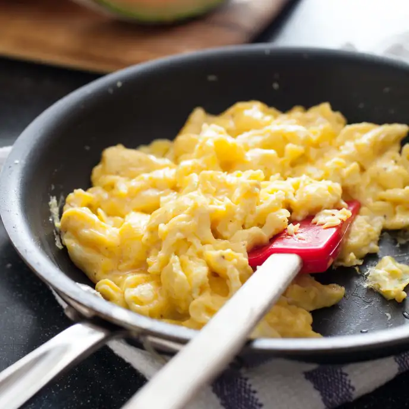

Perfect Scrambled Eggs

Description
I stole this recipe from America's Test Kitchen. How dare they paywall me.
Ingredients
- 8 large eggs plus 2 large yolks
- ¼ cup half-and-half
- 1 tablespoon unsalted butter, chilled
- Salt and Pepper
Procedure
- Step 1: Beat eggs, yolks, half-and-half, 3/8 teaspoon salt, and 1/4 teaspoon pepper with fork until eggs are thoroughly combined and color is pure yellow; do not overbeat.
- Step 2: Heat butter in 10-inch nonstick skillet over medium-high heat until foaming just subsides (butter should not brown), swirling to coat pan. Add egg mixture and, using rubber spatula, constantly and firmly scrape along bottom and sides of skillet until eggs begin to clump and spatula just leaves trail on bottom of pan, 1 1/2 to 2 1/2 minutes. Reduce heat to low and gently but constantly fold eggs until clumped and just slightly wet, 30 to 60 seconds. Immediately transfer eggs to warmed plates and season with salt to taste. Serve immediately.